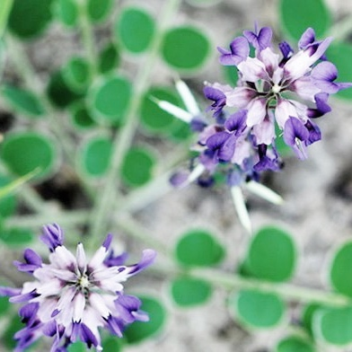

เถาเอ็นอ่อน
สรรพคุณ
สรรพคุณ : เป็นยาเย็น มีพิษ ออกฤทธิ์ต่อหัวใจและตับ ใช้เป็นยาฟอกเลือด ขับลมในลำไส้และในกระเพาะอาหาร ทำให้ผายลมและเรอ ช่วยแก้อาการจุกเสียดแน่นท้อง

เปราะหอม
สรรพคุณ
สรรพคุณ :ใช้เป็นยาแก้ปวดศีรษะ คลายเครียด ใช้เป็นยาบำรุงหัวใจ บำรุงประสาท ด้วยการใช้หัวผสมลงในยาหอม หัวเปราะหอมนำมาต้มหรือชงกิน จะช่วยในการนอนหลับได้เป็นอย่างดี และยังช่วยลดความเครียดได้อีกด้วย